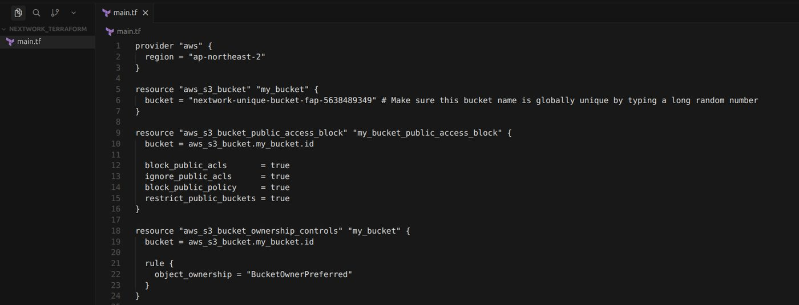
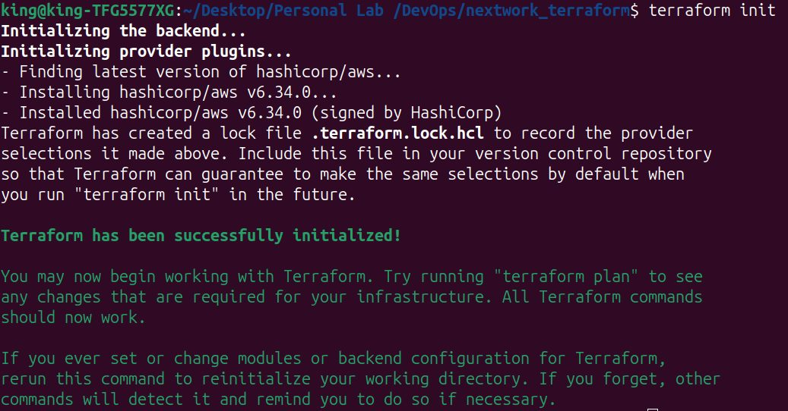
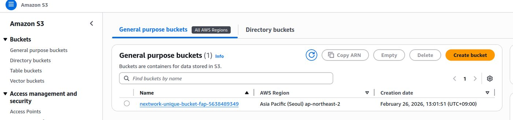
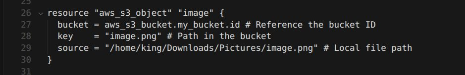

Reading the provider docs was the actual work
Nothing failed loudly here. The slow part was finding the right resource and arguments in the Terraform registry for the ownership rule — the config is short because the documentation reading was long.
Case study — Infrastructure as Code
I declared an S3 bucket, its public-access block, an ownership rule and an uploaded object in one main.tf, and created every one of them with terraform init, plan and apply instead of the console.
I built this in my own AWS account as a guided NextWork lab. I'm not pointing you at a live endpoint — the screenshots below were captured during the build, and terraform apply against the same main.tf recreates all of it. Everything below is in the past tense for that reason.
Summary
main.tf started with three blocks: the AWS provider in ap-northeast-2, an aws_s3_bucket, and an aws_s3_bucket_public_access_block with all four switches on. terraform init downloaded the AWS provider and wrote the lock file, plan showed exactly what would be created, and apply created it. Then I extended it from the registry docs: an aws_s3_bucket_ownership_controls block so objects belong to the bucket owner whoever uploads them, and an aws_s3_object that uploads an image. Each change was another plan and apply.
The mechanism
Why init, then plan, then apply? init downloads the provider plugin, sets up where state is kept, and writes .terraform.lock.hcl so the next run picks the same provider version — nothing else works until it has run. plan is the review: it says what will be created, changed or destroyed before anything happens. apply then does exactly that.
Why block public access in the same file as the bucket? So the bucket is private from the moment it exists, not patched afterwards. The access block references the bucket by aws_s3_bucket.my_bucket.id, which is also how Terraform knows to create the bucket first.
Why add an ownership rule? Without it, an object uploaded by another account can stay owned by that account even inside my bucket. BucketOwnerPreferred makes the bucket owner the object owner, so permissions on the bucket actually cover what's in it.
| No | From → to | Mechanism | What happens |
|---|---|---|---|
| 1 | Engineer → main.tf | write | Provider, bucket, access block; later the ownership rule and the object. |
| 2 | main.tf → Terraform CLI | read config | Terraform builds its plan from the file. |
| 3 | Terraform CLI → Terraform Registry | terraform init | Downloads the AWS provider and pins it in .terraform.lock.hcl. |
| 4 | Terraform CLI → State | state write | Records what exists so the next plan is a diff, not a guess. |
| 5 | Terraform CLI → S3 bucket | terraform apply | Creates exactly what the reviewed plan showed, starting with the bucket. |
| 6 | Public access block → S3 bucket | bucket ID ref | aws_s3_bucket.my_bucket.id — the reference is also the dependency order. |
| 7 | Ownership controls → S3 bucket | bucket ID ref | Applied on a second plan and apply. |
| 8 | S3 object → S3 bucket | bucket ID ref | Uploads image.png from a local path; checked by downloading it back. |
Public — nothing; all four public-access switches were on from creation.
Private — the bucket and image.png, readable by my account.
Local — state and the lock file, on my machine — fine for one person, which is what the GitOps pipeline later replaced with S3 and DynamoDB.
Evidence, separated from design intent
Building something and being able to prove it works are different claims, so I've kept them separate below. Measured means I created the condition myself and recorded what happened. Observed means I looked at the AWS console and saw the state it was already in. By design means the configuration guarantees it, but I didn't run a test against it — better to say that plainly than dress it up as a result.
After adding the aws_s3_object block and applying again, I found the object in the S3 console, downloaded it, and compared it with the local file.
Method Downloaded image.png from the bucket and compared it with the source.
terraform init installed hashicorp/aws v6.34.0 and created the lock file; after apply, the S3 console listed nextwork-unique-bucket-fap-5638489349 in Asia Pacific (Seoul).
Method Read the init output and the S3 bucket list.
The ownership control applied cleanly on the second apply. I only ever uploaded from my own account, so I haven't seen it take ownership of an object someone else wrote.
Method Reviewed the applied configuration. No cross-account upload was tried.
Every setting is in main.tf, so the whole thing recreates from one apply. I didn't destroy and recreate it to prove the round trip.
Method Reviewed main.tf against the console settings. No destroy/recreate test.
Four claims. one measured, one observed, two stated as design properties rather than dressed up as results.
Captured during the build

main.tf with the ownership rule added.
terraform init: provider installed, lock file written.
apply.
One failure worth keeping
Nothing failed loudly here. The slow part was finding the right resource and arguments in the Terraform registry for the ownership rule — the config is short because the documentation reading was long.
Everything on this page came from here
The Terraform configuration, its variables and the committed provider lock file live here: kingswanzy2020/nextwork-terraform-s3. The same lifecycle at scale is the Terraform GitOps pipeline.
git clone https://github.com/kingswanzy2020/nextwork-terraform-s3.git terraform init && terraform plan && terraform apply
Stack
Terraform · HCL · provider configuration · state & lock files · Amazon S3 · public access blocks · ownership controls · AWS CLI